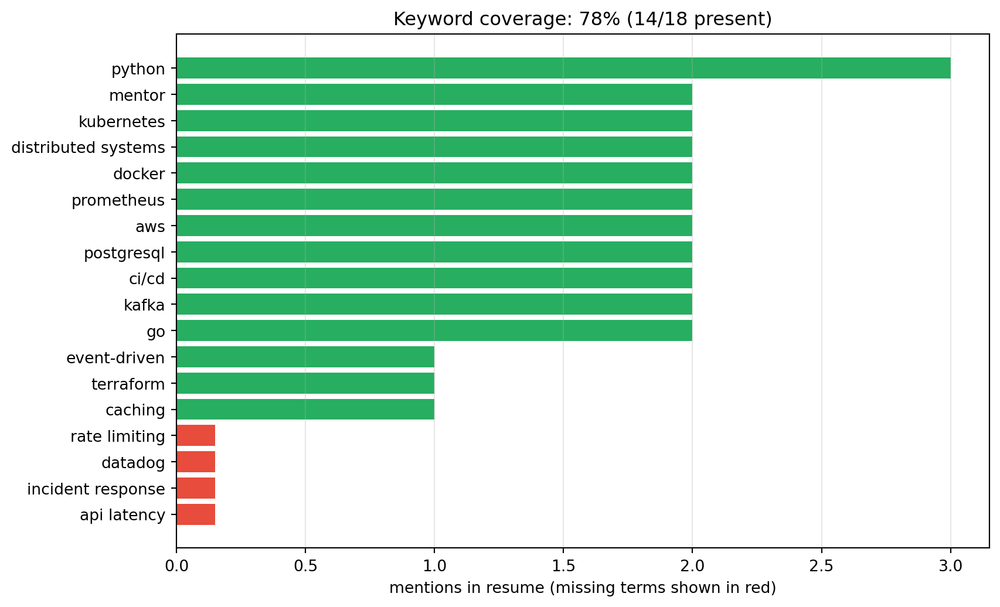

flowchart TD
A["Application submitted<br/>(resume, LinkedIn, or referral)"] --> B{"Referral?"}
B -- "Yes" --> C["Warm intro bypasses<br/>the resume pile"]
B -- "No" --> D["ATS ingest + parse"]
D --> E{"Knockout questions,<br/>location, work authorization"}
E -- "Fail" --> X["Auto-rejection"]
E -- "Pass" --> F["Indexed and rankable"]
F --> G["Recruiter Boolean search<br/>+ filters"]
G --> H["7-second human scan"]
C --> H
H --> I["Recruiter phone screen"]
I --> J["Hiring manager screen"]
J --> K["Technical / panel loop"]
K --> L["Offer"]
Getting the Interview: ATS-Proof Resumes, LinkedIn Optimization, Referrals, and Networking
A complete, evidence-based playbook for beating applicant tracking systems, writing recruiter-readable resumes, turning LinkedIn into an inbound interview engine, and systematically earning referrals through warm and cold networking
Career
Job Search
Resumes
LinkedIn
ATS
Recruiting
Networking
Personal Branding
Professional Development
A comprehensive guide to getting interviews in the modern hiring stack: how applicant tracking systems parse, index, and rank resumes; the anatomy of an ATS-safe resume; keyword and title-matching strategy against job descriptions; XYZ/STAR bullets and quantification; how LinkedIn’s recruiter search and ranking algorithms work; a field-by-field LinkedIn optimization checklist; how to find, map, and ask for referrals using proven message templates; informational interviews and cold/warm outreach; follow-up cadences; a metrics-driven application funnel; common red flags; and an executable Python laboratory that scores a resume and LinkedIn headline against a job description using keyword coverage and TF-IDF cosine similarity.
“You are not looking for a job. You are looking for an interview. The resume and the profile are not the goal; they are the ticket.”
Most qualified candidates are filtered out before a human ever reads a word — not because they lack ability, but because their materials are invisible to a parser and to a recruiter’s search query. This essay treats the job search as an engineering problem: an input (your history), a noisy channel (ATS software and recruiter attention), and an objective (the interview). We optimize the signal at every stage.
TipCompanion Reading
1 The Hiring Funnel: Where Resumes and LinkedIn Actually Matter
Every interview starts as a filtering problem. Understanding the funnel tells you where to spend effort, because optimizing the wrong stage is wasted motion.
Three facts follow from this diagram and should govern your entire strategy:
- Referrals skip the parser entirely. A referred candidate enters at the human-read stage. This is why referrals are the single highest-yield channel in the funnel, and why we devote a full section to them below.
- ATS software rarely “rejects” you. In most systems it is a database, not a judge. It parses, stores, and enables search. The exceptions are explicit knockout questions and hard filters.
- The scan is brutal. Eye-tracking studies (Ladders, 2018; replicated by several resume vendors) find recruiters spend roughly 6–8 seconds on an initial resume pass. They are not reading; they are pattern-matching for title, company, dates, and a few keywords.
An application is therefore best understood as a query being answered. Your job is to make yourself retrievable, scannable, and credible — in that order.
2 How Applicant Tracking Systems Really Work
An applicant tracking system (ATS) is an HR database with a résumé parser bolted on. Its purpose is compliance, workflow, and search — not literary judgment. Roughly three-quarters of large employers in North America use one, with penetration near universal at Fortune 500 companies and lower at small startups.
2.1 The Parsing Pipeline
Parsing is the mechanical conversion of your document into structured fields. Understanding the stages tells you exactly what formatting is safe.
flowchart LR
A["Upload .docx / .pdf"] --> B["Text extraction<br/>fonts, order, layout"]
B --> C["Entity recognition<br/>name, email, phone, location"]
C --> D["Section detection<br/>experience, education, skills"]
D --> E["Job-title & date parsing<br/>YYYY-MM ranges"]
E --> F["Normalization<br/>titles, skills, locations"]
F --> G["Search index<br/>keyword + metadata store"]
G --> H["Recruiter queries<br/>Boolean + filters"]
The critical insight: every stage after text extraction depends on the parser correctly recognizing structure. A two-column layout can scramble reading order; a table can drop cells; a text box can vanish entirely. The parser does not know your intent — it only knows patterns.
2.2 The Major Systems You Will Meet
| System | Typical buyer | Notes for candidates |
|---|---|---|
| Workday | Large enterprises | Reliable parser; strict knockout questions; strong internal mobility |
| Greenhouse | Mid-size and scaling tech | Good structure, structured interview kits, referral-friendly |
| Lever | Startups / mid-market | Clean pipeline, email-centric, referral flows |
| iCIMS | Large enterprises | Long-standing; conservative formatting expectations |
| Oracle Taleo | Legacy large enterprises | Older parser; most sensitive to layout problems |
| SAP SuccessFactors | Global enterprises | Heavy standardization; careful date handling |
| SmartRecruiters / Ashby / Workable | Mid-market / startups | Modern parsers; tolerant of clean single-column PDFs |
You will rarely know which system a company uses. The solution is not to optimize for one vendor but to write a resume that is maximally parseable everywhere.
2.3 What Breaks Parsing
These are the recurring failure modes reported across parser studies and vendor documentation:
- Multi-column layouts and magazine-style sidebars — extract in the wrong order.
- Tables and grid layouts — cells may be dropped or interleaved.
- Text boxes, shapes, and WordArt — frequently ignored entirely.
- Headers and footers — often skipped, which is why contact info belongs in the body.
- Images and graphics that contain text — not read by older parsers.
- Icons used in place of labels (for phone, email) — meaningless without a text label.
- Non-standard section names (“Where I’ve Been” instead of “Experience”).
- Scanned documents and image-only PDFs — no text layer to extract.
- Exotic fonts and symbols — ligatures and glyphs can corrupt text.
- Inconsistent or ambiguous date formats (“Summer 2023”, “2022–present” mixed with “01/2020”).
2.4 Nine ATS Myths and the Reality
- “ATS auto-rejects 75% of resumes.” Partly true in effect, wrong in mechanism. Most rejections are knockouts, recruiter absence, or ranking — not an anti-human algorithm. The practical takeaway (make yourself searchable) still holds.
- “PDFs can’t be read.” Modern parsers read text-based PDFs well. Scanned or graphically-constructed PDFs are the problem.
- “You must use .docx.” Follow the posting’s stated preference. If unspecified, a clean text-based PDF or .docx both work; .docx is the safest lowest-common-denominator for legacy systems.
- “Keywords must be repeated dozens of times.” Rankings are relevance-based. Natural, contextual placement beats stuffing, and stuffing now reads as low quality to humans.
- “ATS reads your LinkedIn automatically.” Only if you explicitly import or apply with it; even then, parsing is imperfect.
- “A cover letter is never read.” Usually true, but a tailored letter can matter at small companies and for career changers. Write one when you have something real to say.
- “One resume should fit all jobs.” The opposite: one master resume, many tailored derivatives.
- “White text keyword stuffing works.” It does not, and it is an instant credibility killer when discovered.
- “You can’t beat the system, so give up.” You cannot game it, but you can absolutely satisfy it. That is the entire thesis of this essay.
3 The Anatomy of an ATS-Safe Resume
An ATS-safe resume is boring by design. The goal is zero parse errors and a fast human scan.
3.1 File Format, Name, and Delivery
- Format:
.docxif the employer requests it or is a large legacy enterprise; otherwise a text-based PDF exported from a word processor (not Canva, not a design tool, not a scan). - Filename:
Firstname-Lastname-Resume.pdf(andFirstname-Lastname-Cover-Letter.pdf). Noresume_final_v7_reallyfinal. - One page for under ~8 years of experience; two pages beyond that, or for academic/technical CVs where publications require it. Recruiters rarely read page three.
- Delivery: apply through the ATS when it exists. Emailed applications are increasingly ignored for compliance reasons.
3.2 Layout and Typography Rules
- Single column. No sidebars. If a design tempts you, remember: a beautiful layout that parses badly is a beautiful rejection.
- Standard fonts: Calibri, Arial, Helvetica, Georgia, Garamond, or Times New Roman. 10–12 pt body, 14–16 pt name.
- Margins: 0.5–1 inch on all sides.
- Bullets: a simple round bullet or hyphen, applied with the word processor’s list tool — not a manually typed character.
- Bold and italic are fine for emphasis. Underlining is unnecessary. All caps for section headers is fine.
- Dates on the right or inline, but consistent:
Jan 2021 – Present,01/2021 – 05/2023, or2021 – Present. Pick one and never mix. - No tables, columns, text boxes, headers, footers, photos, charts, or logos.
3.3 Approved Section Headings
Parsers match a vocabulary. Use the standard set:
Summary · Professional Experience · Work Experience · Education · Skills · Technical Skills · Projects · Certifications · Publications · Awards · Volunteer Experience · Languages
Avoid “My Journey,” “Where I’ve Made an Impact,” or other creative titles. Creativity belongs in the bullets, not the labels.
3.4 Contact Block
At the very top, in the body of the document:
Jordan Rivera
City, ST · (555) 123-4567 · jordan.rivera@email.com
linkedin.com/in/jordanrivera · github.com/jordanrivera- Do: put it in body text, plain, on one or two lines.
- Don’t: include a full street address, photo, age, marital status, or a phone number you won’t answer.
3.5 The Parsing Stress Test
Before submitting any document, run this test: copy the entire resume, paste it into a plain text editor, and read it top to bottom. If the order is scrambled, if sections are missing, or if contact details are absent, a parser will see the same mess. This five-second test catches the majority of formatting failures.
4 Keyword Strategy: Reading the Job Description Like an Algorithm
The job description is the answer key. Your resume should be the closest legitimate match to it.
4.1 Hard Skills, Soft Skills, and Title Matching
- Hard skills are the retrievable tokens:
Python,SQL,Kubernetes,FP&A,React,clinical trials,SEO. These are what Boolean searches target, and they carry the most weight. - Soft skills matter to humans but rarely drive search:
cross-functional,stakeholder management,mentoring. Include a few naturally; do not build the resume around them. - Title matching is the highest-leverage trick most candidates miss. If the posting says “Senior Data Analyst” and your title was “Data Scientist II,” consider a parenthetical:
Data Scientist II (Senior Data Analyst equivalent). This aligns you to the requisition without lying.
4.2 The Acronym Trap
Every field has acronyms with expansions, and you cannot know which the recruiter will search. Include both at first mention:
“Led CI/CD (continuous integration and continuous delivery) migration…”
“Owned P&L (profit and loss) for a $40M product line…”
“Built ETL (extract, transform, load) pipelines in Apache Airflow…”
This one habit doubles your retrievability at the cost of a few words.
4.3 Where Keywords Must Appear
Ranked by typical retrieval weight:
- Job title — if you can align it honestly, do.
- Skills / Technical Skills section — the parser’s favorite field.
- Summary — the first thing a human reads and a dense keyword location.
- Experience bullets — context and proof.
- Projects, certifications, publications.
4.4 The Keyword Coverage Target
Extract every hard skill from the job description, then check which appear in your resume. Aim for 70–85% coverage of the must-have terms. Below 60% you are likely to be filtered; above 90% you risk either a perfect but implausible match or keyword stuffing. The Python laboratory at the end of this essay computes this automatically.
4.5 Stuffing, Lies, and ATS Gaming
Two rules govern all keyword decisions:
- Truth is non-negotiable. A keyword you cannot defend in an interview is a liability, not an asset. Interviewers and reference checks catch fabrications, and modern background screening is thorough.
- Context beats repetition. “Python” listed once in skills and demonstrated in three bullets outperforms the word repeated nine times. Relevance ranking and human readers both reward the former.
5 Bullets That Get Read: XYZ, STAR, and Quantification
Once parsed, the resume must survive a 7-second scan. Structure and numbers are what make a bullet survive.
5.1 The XYZ Formula
Popularized through Google’s hiring guidance (and Laszlo Bock’s Work Rules!), the formula is:
Accomplished [X] as measured by [Y] by doing [Z].
Examples by discipline:
- Software: “Reduced API p95 latency by 62% (X) as measured by Datadog dashboards (Y) by introducing request batching and a read-through cache (Z).”
- Data: “Grew weekly active reporting users from 40 to 900 (X) as measured by Looker usage (Y) by rebuilding the metrics layer and running analyst office hours (Z).”
- Product: “Increased 30-day retention 11 points (X) as measured by cohort analysis (Y) by shipping an onboarding checklist and lifecycle emails (Z).”
- Finance: “Cut monthly close from 9 to 4 days (X) as measured by controller sign-off (Y) by automating reconciliations in NetSuite (Z).”
5.2 The STAR/CAR Variant
For behavioral and managerial bullets, use Situation–Task–Action–Result or Challenge–Action–Result, compressed to one or two lines:
“Inherited a payments service with 4% weekly incident rate (S/T). Introduced a service-level objective program and automated rollback (A). Reduced incidents to 0.3% and on-call pages by 80% (R).”
5.3 The Action Verb and Metric Treasury
Start every bullet with a strong, varied verb — never “Responsible for.” Rotate through:
Leadership: led, directed, owned, scaled, established, mentored, negotiated. Creation: built, designed, architected, launched, shipped, implemented, automated. Improvement: reduced, increased, optimized, accelerated, simplified, consolidated, eliminated. Analysis: analyzed, modeled, forecasted, diagnosed, quantified, benchmarked.
Quantify along at least one axis per bullet:
- Money — revenue, cost, budget, savings.
- Time — latency, cycle time, days saved, throughput.
- Percentage — growth, reduction, error rate.
- Scale — users, requests, data volume, headcount, geographies.
- Quality — NPS, SLA attainment, defect rate, conversion.
If you truly cannot quantify, quantify the scope: “across 12 teams and 3 regions.”
5.4 Before and After
| Weak | Strong |
|---|---|
| Responsible for managing social media accounts | Grew organic Instagram following from 2k to 48k in 9 months by systematizing a 5-post weekly content calendar |
| Worked on the backend | Designed and shipped a payments API handling 3M requests/day at 99.99% availability |
| Helped with hiring | Hired and onboarded 14 engineers, cutting average time-to-fill from 58 to 31 days |
| Improved processes | Eliminated 20 hours/week of manual data entry by automating reconciliation in Python |
5.5 Calibrating to Seniority
- Junior: emphasize execution, learning velocity, and shipped outcomes.
- Mid: emphasize ownership, measurable impact, and cross-team collaboration.
- Senior/Staff: emphasize scope, ambiguity, strategy, mentorship, and org-level results.
- Manager/Director: emphasize team outcomes, hiring, budget, and business metrics over individual output.
One caution: never inflate titles or dates. Background checks verify employment history, and discrepancies are among the most common reasons offers are rescinded.
6 The Master Resume and the Tailoring Workflow
Maintain one master resume containing everything — every role, project, metric, and technology — regardless of length. Then create targeted derivatives. This separates the memory problem from the marketing problem.
The tailoring loop, about 30 minutes per application:
- Save the job description to a file named for the company.
- Highlight every hard skill and the exact job title.
- Reorder and trim the master resume so the most relevant material appears first.
- Mirror the vocabulary of the posting (both acronym and expansion).
- Rewrite 3–5 bullets to emphasize the outcomes this employer cares about.
- Run the coverage check (the lab below) and target 70–85%.
- Plain-text paste test, then export to the required format.
- Record the version in your tracking sheet (see the funnel section).
Two or three strong, tailored applications beat twenty generic ones. Volume without tailoring is noise.
7 LinkedIn Is a Search Engine: How Recruiters Actually Find You
LinkedIn is not a portfolio that people discover organically. It is a searchable database that recruiters query. Your profile is optimized when it matches the queries that recruiters in your field actually type.
7.1 The Recruiter Search Stack
Recruiters use three layers:
- LinkedIn Recruiter / Talent filters — keywords, titles, skills, location, company, years of experience, open-to-work status.
- Boolean search — explicit operators against profile text.
- X-ray / Google search —
site:linkedin.com/incombined with keywords, used to bypass search limits.
A representative Boolean string for a backend role:
("software engineer" OR "backend engineer") AND (Python OR Go) AND (Kubernetes OR Docker) AND "distributed systems" -InternA representative X-ray string:
site:linkedin.com/in "machine learning engineer" "PyTorch" "San Francisco"If those terms do not appear in your profile text, you are invisible to that query no matter how strong you are.
7.2 Ranking Signals
LinkedIn’s ranking (and Recruiter’s relevance ordering) tends to reward:
- Keyword match between the query and your profile fields.
- Skills associated with your profile (heavily weighted, because they are structured data).
- Profile completeness — every filled field is a signal.
- Connections and network proximity — degrees of separation from the searcher.
- Activity and engagement — recent posts, comments, and shares.
- Recommendations — social proof and additional keyword surface.
- Open to Work / Career Interests — explicit recruiter visibility flags.
7.3 Profile Completeness as a Multiplier
Treat LinkedIn like an SEO page. Every section you leave empty is a keyword you cannot be found for, and an incomplete profile ranks lower even when it matches. The next section is a field-by-field optimization pass.
8 LinkedIn Profile Optimization, Field by Field
8.2 Headline (220 characters)
The headline is indexed and appears in every search and comment. Use the formula:
Role | Specialty | Value / Proof | Keywords
Examples:
Senior Backend Engineer | Python, Go, Kubernetes | Scaling distributed systems to 1M+ usersData Analyst → Analytics Engineer | SQL, dbt, Looker | Turning messy data into decisionsTechnical Program Manager | Cloud Infrastructure | Delivering multi-team platforms on time
Include the exact titles recruiters search for. “Builder of delightful abstractions” is charming and unfindable.
8.3 About Section (2,600 characters)
Write three tight paragraphs:
- Hook: what you do and the value you create, in plain language and with keywords.
- Proof: 3–5 quantified accomplishments drawn from your master resume.
- Invitation: what you are looking for and how to reach you. Add a call to action.
I build and scale backend systems that stay fast and reliable as they grow.
Over 8 years I have shipped payment, identity, and data services handling
tens of millions of requests a day.
Highlights:
• Cut API p95 latency 62% while traffic tripled.
• Led migration to Kubernetes, reducing infra cost 34%.
• Mentored 12 engineers, 4 promoted to senior.
Open to senior backend roles (Python/Go, distributed systems) in the US,
remote or hybrid. Reach me at jordan.rivera@email.com.The About section is prime real estate for natural keyword density — write for humans, but do not omit the tokens recruiters search.
8.4 Experience
- Use the same titles and dates as your resume — consistency builds trust and satisfies verification.
- Write 3–6 bullets per role using XYZ, mirroring your resume but slightly more narrative.
- Attach skills and media (dashboards, repos, case studies) to each role.
- Add company descriptions where the employer is obscure, so both algorithms and readers understand context.
8.5 Skills
This is the most under-used field in the entire platform.
- Fill up to 50 skills. Rank the ones you want to be found for.
- Pin the top 3 that best match your target role.
- Populate skills from the job descriptions you are targeting — but only skills you legitimately have.
- Ask colleagues to endorse them; endorsements increase credibility and are themselves ranking inputs.
8.6 Featured
Add your best proof: a portfolio, a GitHub repo, a published article, a conference talk, a design case study. The Featured section is highly visible and links outward.
8.7 Education, Certifications, Licenses, Projects, Publications
- Complete Education with field of study — a keyword surface.
- Add Licenses & Certifications (
AWS Certified Solutions Architect,PMP,CPA) — exact credential names are search tokens. - Add Projects with technologies used.
- Add Publications for research and academic roles.
8.8 Open to Work and Career Interests
- Open to Work (recruiters only): invisible to the public and to your employer, visible to recruiters. Low-risk; turn it on.
- Open to Work (public green frame): higher visibility, but not advisable if your employer may see it. Use judgment.
- Career Interests / job preferences: specify titles, locations, and work style so recruiters’ filters match you.
8.9 Recommendations and Endorsements
- Request 2–5 recommendations from managers, peers, and clients. Give them a draft to make it easy.
- Endorse others generously; reciprocity is real and endorsements feed ranking.
- Recommendations add keyword surface and social proof, and they cannot be faked as easily as self-description.
8.11 Settings and Privacy That Affect Discoverability
- Public profile visibility: on.
- “Share profile updates with your network”: useful when you make changes.
- Profile viewing options: balance privacy against curiosity.
- Recruiter visibility: ensure you are discoverable.
- Location: keep it accurate and aligned with the markets you want.
9 Finding and Asking for Referrals
A referral is the highest-probability path to an interview in the entire system. Referred candidates are dramatically more likely to be interviewed and hired, because they arrive pre-validated and bypass the parser and the resume pile. The uncomfortable truth is that the best-known way to get hired is not to apply at all — it is to be introduced.
9.1 The Referral Decision Tree
flowchart TD
A["Target company + role"] --> B{"Do I know<br/>anyone there?"}
B -- "Yes, strong tie" --> C["Direct referral request"]
B -- "Yes, weak tie" --> D["Warm re-connect,<br/>then request"]
B -- "No one" --> E{"Alumni, community,<br/>or event tie?"}
E -- "Yes" --> F["Alumni / community outreach"]
E -- "No" --> G["Cold outreach to<br/>relevant employee"]
C --> H["Send JD + resume<br/>+ short blurb"]
D --> H
F --> H
G --> H
H --> I["Employee submits referral<br/>through internal portal"]
I --> J["Recruiter sees referred flag"]
9.2 Map Your Network Before You Ask
Referrals are won by preparation, not luck. Build a simple inventory in a spreadsheet:
- Circle 1 — people who know your work: former managers, teammates, clients, professors.
- Circle 2 — people who know your name: classmates, conference acquaintances, former interns, community members.
- Circle 3 — people who share an affiliation: alumni, bootcamp cohorts, open-source collaborators, professional associations.
Then map Circle 1–3 members against your target-company list, and use LinkedIn’s “Connections at company” and alumni filters to find bridging ties. You are looking for the shortest path between someone who trusts you and someone who works at the target.
9.3 Who to Ask — and Who Not To
- Ask: people who have seen your work, people you have helped, and people who are one step away but share an affiliation.
- Ask carefully: a very senior person at your dream company may say yes out of politeness but forget. A peer on the team who knows you is often a better advocate.
- Do not ask: someone you have never spoken to, with a copy-pasted message and a demand. That is not networking; it is spam with extra steps.
9.4 The Referral Message Sequence
Message 1 — reconnect or warm up (Circle 1/2):
Hi Maya — it’s been a while since the Acme days. I saw you’ve been at Northwind for a couple of years now and the platform work there looks impressive. I’m exploring senior backend roles and Northwind is near the top of my list. Would you be open to a 15-minute chat about what it’s like on the team?
Message 2 — the ask (after a reply, or with a strong existing tie):
Thanks for the chat — really helpful. There’s a Senior Backend Engineer opening (req 4821) that lines up closely with my payments and Kubernetes work. I’ve attached my resume and a three-line blurb. Would you be comfortable submitting a referral? No pressure at all if not, and I appreciate you either way.
Message 3 — make it effortless:
To make it easy, here’s a blurb you can paste: “Jordan Rivera — 8 years backend, ex-Acme. Cut API p95 latency 62%, led a Kubernetes migration that saved 34% on infra. Strong fit for the payments platform team.” Resume and the job link are below.
Message 4 — cold outreach (Circle 3), short and specific:
Hi Priya — I’m a backend engineer exploring roles at Northwind, and your work on the payments infrastructure team intersects directly with what I did at Acme (Python, Kafka, Kubernetes). I’m not asking for a referral cold; I’d just value 15 minutes to learn how your team is structured. Would you be open to a short call?
9.5 The Golden Rules of Referral Etiquette
- Never send a referral request with no context. Reference how you know them and why the role fits.
- Always do the work: give them the job link, your resume, and a ready-made blurb. Reduce their effort to near zero.
- Never ask someone to refer a candidate they cannot vouch for. Their reputation is on the line.
- Follow up once. If there is no reply, let it go gracefully and keep the relationship warm.
- Close the loop. Tell them the outcome, thank them regardless, and return the favor later.
- Give first. Share their content, make introductions, send leads, write recommendations. Networking is a bank account; referrals are withdrawals.
9.6 When You Have No Network
- Alumni networks: school alumni databases and LinkedIn’s education filter are goldmines. A shared alma mater is a credible, warm-enough reason to reach out.
- Communities: Discord servers, Slack groups, subreddits, and open-source projects in your field. Become a genuine contributor before asking.
- Events and conferences: meetups, hackathons, and industry conferences. Follow up within 24 hours with a specific note.
- Bootcamps and cohorts: career services and cohort peers frequently share openings and refer each other.
- Mutual connections: ask a shared contact for an introduction rather than cold-messaging a stranger.
10 Networking for the Job Search
Networking is not asking for a job. It is building the relationships through which jobs arrive. The most reliable vehicle is the informational interview: a short conversation where you learn and the other person talks.
10.1 The Three Circles of Networking
- Maintain: people who know you well. Keep in light, genuine contact — a note when they are promoted, a congrats on a launch. No ask.
- Expand: people one step out. Reconnect with context and curiosity.
- Activate: when you are job searching, convert relevant relationships into referrals.
Most people only ever activate, having never maintained — which is why their asks feel transactional and land poorly.
10.2 Informational Interview Script (15 minutes)
“Thanks for making time. I’m exploring [field/role] and I’d love your perspective. Three questions: How did you get into [role]? What does a strong first year look like on your team? And what would you want to see in a candidate for the kinds of roles I’m targeting?”
Then listen, take notes, and close with:
“This was incredibly useful. Is there anyone else you’d suggest I talk to? And if a relevant opening comes up, would you be open to me following up?”
That final question plants the referral seed organically.
10.3 Cold and Warm Outreach Templates
LinkedIn connection request (300 characters):
Hi Sam — fellow [university/community] alum. I’m a backend engineer exploring roles in distributed systems at [company]. Would value staying connected and learning from your path.
Email cold outreach:
Subject: Backend engineer exploring [Company] — quick question
Hi Sam, I’m a backend engineer with 8 years shipping payments infrastructure (Python, Go, Kubernetes). I’ve followed [Company]’s work on [specific thing] and I’m curious how your team approaches [specific challenge]. Would you be open to a 15-minute call? Happy to work around your schedule. Resume attached. Thanks for considering it. Jordan
Keep it under 100 words, specific, and low-commitment. The ask is for a conversation, not a job.
10.4 Follow-Up Cadence
- After a conversation: thank-you note within 24 hours, referencing something specific they said.
- After applying: a brief note to your contact that you applied, with the req number — not a demand for referral.
- After an interview: thank-you within 24 hours to each interviewer, referencing a concrete topic.
- If no reply: one polite follow-up after 5–7 business days, then move on and keep the relationship warm.
10.5 Events, Communities, and Conferences
- Local meetups: highest ROI for genuine connection; small enough to actually talk.
- Conferences: target a handful of people in advance and follow up within 24 hours.
- Discord/Slack communities: answer questions publicly; referral opportunities surface in the channels.
- Open source: sustained contributions are a long-term referral engine — maintainers and contributors hire each other.
10.6 Giving Before Asking
The networking that compounds is asymmetrical in the other direction first: share a job lead, make an introduction, answer a question, amplify someone’s work. When you later need a referral, you are calling in credit you have genuinely earned.
11 Outreach and Follow-Up Templates at a Glance
| Situation | Channel | Length | Core ask |
|---|---|---|---|
| Reconnect with a former colleague | LinkedIn message / email | 3 sentences | A 15-minute chat |
| Referral request | Email / LinkedIn | 5 sentences | Submit a referral |
| Cold outreach to a stranger | LinkedIn / email | 4 sentences | A short call |
| Alumni intro | 2 sentences | Connection + learning | |
| Informational interview | Call/coffee | 15 min | Insight, then referral seed |
| Post-conversation thanks | 2 sentences | Courtesy, no ask | |
| Post-interview thanks | 3 sentences | Gratitude + one insight | |
| No-reply follow-up | 2 sentences | Gentle nudge |
12 The Application Funnel: Track, Measure, Iterate
Treat the job search like an experiment with a measurable funnel. Without tracking, you cannot diagnose whether the problem is targeting, materials, or interviews.
12.1 Benchmarks
Use these as directional, not absolute — rates vary by field, seniority, and market:
| Metric | Typical | Healthy target |
|---|---|---|
| Cold applications → recruiter screen | 2–5% | 8–15% with tailoring |
| Referred applications → screen | 20–40% | 40–60% |
| Recruiter screen → hiring manager | 50–70% | 70%+ |
| Manager screen → onsite/panel | 30–50% | 50%+ |
| Panel → offer | 20–35% | 35%+ |
| Networking outreach → reply | 10–25% | 30%+ with personalization |
12.2 The Tracking Sheet
One row per application, with columns:
Company · Role + req ID · Date applied · Source (cold/referral/recruiter) · Resume version · Contact + follow-up date · Stage · Next action · Outcome · Notes / feedback
12.3 Diagnosing by Symptom
| Symptom | Likely cause | Fix |
|---|---|---|
| No responses to cold applications | Weak keyword match or ATS-unfriendly format | Tailor to 70–85% coverage; run the plain-text and coverage tests |
| Some screens, few manager interviews | Weak narrative or unclear impact | Sharpen the summary and XYZ bullets |
| Interviews but no offers | Interview prep, not materials | Rehearse behavioral stories (STAR) and case/technical loops |
| Referrals stall | Weak or uncertain advocate | Choose advocates who know your work; make the ask effortless |
| Outreach ignored | Generic, high-commitment asks | Personalize, shorten, ask for 15 minutes not a job |
| Lots of activity, few results | Volume without targeting | Apply to fewer, better-fit roles; invest in referrals |
The fastest path to improvement is almost always more referrals and better targeting, not more applications.
13 Common Mistakes and Red Flags
- The two-column “beautiful” resume that parses into gibberish.
- Contact info only in the header — often skipped by parsers.
- Title inflation or fudged dates — a fatal integrity risk.
- A wall of responsibilities with no outcomes.
- Keyword stuffing and white-text tricks.
- A different resume every time with no master — impossible to maintain or improve.
- One LinkedIn headline for all target roles.
- A blank or sparse LinkedIn profile while applying at scale.
- Copy-pasted outreach that mentions nothing specific.
- Asking for a referral from a stranger with no context, effort, or gratitude.
- No follow-up — most opportunities die from silence, not rejection.
- Targeting job titles instead of outcomes — chase the work you want, not just the label.
14 Computational Laboratory: Score a Resume and a Headline
The two checks that matter most can be automated: keyword coverage against a job description and semantic similarity between your resume and the posting. Below, we embed a sample posting and resume, compute both, and visualize the gaps. Replace the strings with your own materials to run the analysis.
Code
import re
from collections import Counter
import numpy as np
import matplotlib.pyplot as plt
from sklearn.feature_extraction.text import TfidfVectorizer
from sklearn.metrics.pairwise import cosine_similarity
job_description = """
We are hiring a Senior Backend Engineer to scale our payments platform.
You will design distributed systems in Python and Go, deploy on Kubernetes,
and operate event-driven services with Kafka and PostgreSQL. Experience with
AWS, CI/CD, Docker, observability (Datadog or Prometheus), and Terraform is
required. You will improve API latency, lead incident response, mentor
engineers, and partner with product managers to deliver reliable services at
scale. Strong understanding of caching, rate limiting, and distributed
systems is essential.
"""
resume = """
Jordan Rivera - Senior Backend Engineer
City, ST | jordan.rivera@email.com | linkedin.com/in/jordanrivera
Summary
Backend engineer with 8 years building payment and identity services in Python
and Go. Deep experience with distributed systems, event streaming, and cloud
infrastructure. Track record of reducing latency and infrastructure cost at scale.
Experience
Acme Payments - Senior Backend Engineer (2020-Present)
- Reduced API p95 latency 62% while traffic tripled by introducing request
batching and a read-through cache in Python.
- Led migration of 40 services to Kubernetes on AWS, cutting infra cost 34%.
- Designed event-driven ledger using Kafka and PostgreSQL processing 3M events/day.
- Built CI/CD pipelines and Docker images; added Prometheus dashboards and alerts.
- Mentored 12 engineers, 4 promoted to senior.
Skills
Python, Go, Kubernetes, Docker, Kafka, PostgreSQL, AWS, distributed systems,
CI/CD, Prometheus, caching, API design, mentoring, Terraform
"""
SKILLS = ["python", "go", "kubernetes", "distributed systems", "kafka",
"postgresql", "aws", "ci/cd", "docker", "terraform", "datadog",
"prometheus", "api latency", "incident response", "mentor",
"caching", "rate limiting", "event-driven"]
def mentions(text, term):
return len(re.findall(re.escape(term), text.lower()))
print("=== 1. EXACT KEYWORD COVERAGE ===")
present, missing, counts = [], [], []
for s in SKILLS:
c = mentions(resume, s)
(present if c else missing).append(s)
counts.append(c)
coverage = len(present) / len(SKILLS)
print(f" terms in JD/expected: {len(SKILLS)}")
print(f" present in resume : {len(present)} ({coverage:.0%})")
print(f" missing : {', '.join(missing) if missing else 'none'}")
print(f" target band : 70-85%")
print("\n=== 2. SEMANTIC SIMILARITY (TF-IDF cosine) ===")
vec = TfidfVectorizer(stop_words="english", ngram_range=(1, 2))
X = vec.fit_transform([job_description, resume])
sim = cosine_similarity(X[0], X[1])[0, 0]
print(f" cosine similarity : {sim:.3f}")
print(" (0.15-0.40 is a solid, honest match; >0.6 usually means copied text)")
print("\n=== 3. HIGH-WEIGHT JD TERMS MISSING FROM RESUME ===")
jd_scores = dict(zip(vec.get_feature_names_out(), X[0].toarray()[0]))
res_tokens = set(re.findall(r"[a-z/+#.]+", resume.lower()))
gaps = [(t, w) for t, w in sorted(jd_scores.items(), key=lambda kv: -kv[1])
if w > 0.05 and t.split()[0] not in res_tokens]
for t, w in gaps[:10]:
print(f" {t:24s} weight={w:.3f}")
print("\n=== 4. BULLET QUALITY HEURISTICS ===")
bullets = [l.strip(" -•") for l in resume.splitlines() if l.strip().startswith("-")]
verby = re.compile(r"\b(led|built|designed|reduced|increased|grew|shipped|"
r"launched|cut|automated|mentored|migrated|owned)\b", re.I)
numbers = sum(bool(re.search(r"\d", b)) for b in bullets)
strong = sum(bool(verby.search(b)) and bool(re.search(r"\d|%|M|k", b)) for b in bullets)
print(f" bullets: {len(bullets)} with a number/metric: {numbers}"
f" strong (verb + metric): {strong}")
print(" rule of thumb: >=70% of bullets should pair a strong verb with a metric")
fig, ax = plt.subplots(figsize=(9, 5.5))
order = np.argsort(counts)
labels = [SKILLS[i] for i in order]
vals = [counts[i] for i in order]
colors = ["#27ae60" if v > 0 else "#e74c3c" for v in vals]
ax.barh(labels, [max(v, 0.15) for v in vals], color=colors)
ax.set_xlabel("mentions in resume (missing terms shown in red)")
ax.set_title(f"Keyword coverage: {coverage:.0%} ({len(present)}/{len(SKILLS)} present)")
ax.grid(axis="x", alpha=0.3)
plt.tight_layout()
plt.show()=== 1. EXACT KEYWORD COVERAGE ===
terms in JD/expected: 18
present in resume : 14 (78%)
missing : datadog, api latency, incident response, rate limiting
target band : 70-85%
=== 2. SEMANTIC SIMILARITY (TF-IDF cosine) ===
cosine similarity : 0.242
(0.15-0.40 is a solid, honest match; >0.6 usually means copied text)
=== 3. HIGH-WEIGHT JD TERMS MISSING FROM RESUME ===
scale weight=0.150
cd docker weight=0.106
datadog weight=0.106
datadog prometheus weight=0.106
deliver weight=0.106
deliver reliable weight=0.106
deploy weight=0.106
deploy kubernetes weight=0.106
essential weight=0.106
hiring weight=0.106
=== 4. BULLET QUALITY HEURISTICS ===
bullets: 5 with a number/metric: 4 strong (verb + metric): 5
rule of thumb: >=70% of bullets should pair a strong verb with a metric
The output tells a clear story. In this example the resume is strong on core infrastructure terms but missing Datadog, rate limiting, and explicit incident response — exactly the tokens a recruiter would add to their Boolean query. The fix is not to lie, but to surface any real experience with those concepts and to weave the employer’s vocabulary into bullets where it is truthful.
Code
print("=== 5. LINKEDIN HEADLINE EVALUATION ===")
headlines = [
"Builder of delightful abstractions",
"Senior Backend Engineer | Python, Go, Kubernetes | Scaling distributed systems to 1M+ users",
"Senior Backend Engineer - payments infrastructure and distributed systems",
]
target_tokens = {"backend", "engineer", "python", "go", "kubernetes",
"distributed", "systems", "payments"}
for h in headlines:
toks = set(re.findall(r"[a-z+#]+", h.lower()))
hit = target_tokens & toks
cat = [k for k in ["engineer", "backend", "python", "go", "kubernetes"] if k in toks]
print(f"\n \"{h}\"")
print(f" length {len(h)}/220 | target-token hits {len(hit)}/8"
f" | category match {len(cat)}/5")
if len(hit) < 3:
print(" verdict: keyword-poor; invisible to recruiter search")
print("\n Good headlines name the role, the stack, and the outcome.")=== 5. LINKEDIN HEADLINE EVALUATION ===
"Builder of delightful abstractions"
length 34/220 | target-token hits 0/8 | category match 0/5
verdict: keyword-poor; invisible to recruiter search
"Senior Backend Engineer | Python, Go, Kubernetes | Scaling distributed systems to 1M+ users"
length 91/220 | target-token hits 7/8 | category match 5/5
"Senior Backend Engineer - payments infrastructure and distributed systems"
length 73/220 | target-token hits 5/8 | category match 2/5
Good headlines name the role, the stack, and the outcome.15 Checklists
15.1 Resume Checklist
15.2 LinkedIn Checklist
16 A 30-Day Execution Plan
Week 1 — Foundation. Build the master resume. Run the parser stress test and the coverage lab. Write the LinkedIn headline, About, and skills. Set the custom URL.
Week 2 — Targeting. Build a list of 20–30 target companies and roles. Extract keywords from each posting. Create tailored resume versions. Activate Open to Work.
Week 3 — Network. Map Circles 1–3 against targets. Reconnect with five people (no ask). Request three informational interviews. Send two referral requests to strong ties.
Week 4 — Volume with precision. Apply to 8–12 well-matched roles, prioritizing referrals. Track everything in the funnel sheet. Follow up. Post or comment on LinkedIn three times. Review metrics and adjust.
Repeat weeks 3–4 until offers arrive. The pipeline, not any single application, is the unit of progress.
17 Summary
The hiring funnel rewards candidates who understand its mechanics:
\[ \begin{aligned} &\textbf{Funnel: } && \text{referral} \succ \text{tailored application} \succ \text{generic application}. \\[3pt] &\textbf{ATS: } && \text{parse cleanly} \rightarrow \text{index keywords} \rightarrow \text{rank for Boolean search}. \\[3pt] &\textbf{Resume: } && \text{one column, standard headings, } XYZ \text{ bullets, metrics, 70–85\% coverage}. \\[3pt] &\textbf{LinkedIn: } && \text{role + stack + outcome in the headline; every field a keyword}. \\[3pt] &\textbf{Referrals: } && \text{build relationships early; make the ask effortless; never spam}. \\[3pt] &\textbf{Networking: } && \text{give first, ask for conversations, follow up, close the loop}. \\[3pt] &\textbf{Iteration: } && \text{measure the funnel; diagnose by symptom; increase referrals.} \end{aligned} \]
You are not trying to trick a machine. You are trying to be findable by a search engine and believable to a human in seven seconds. Do both, and the interviews follow.
18 Curated References and Further Reading
- Bock, Laszlo (2015). Work Rules! Insights from Inside Google That Will Transform How You Live and Lead. Twelve. (Origin of the XYZ resume formula.)
- Ladders (2018). Eye-Tracking Study: How Recruiters Read Resumes. Ladders Research. (The ~7.4-second scan.)
- Harvard Business Review. “How to Get a Job” and “The Science of Referrals.” HBR. (Referral and networking evidence.)
- Deloitte / Bersin by Deloitte. Employee Referral Benchmarks. (Referrals as a leading source of quality hires.)
- LinkedIn Help Center. Profile completeness, Open to Work, Career Interests, and Recruiter visibility documentation.
- Google. “Guide to Writing a Resume” / Grow with Google career resources.
- Cathey, Glen. Boolean Black Belt. (Boolean sourcing for recruiters and candidates.)
- MIT Career Advising & Professional Development. Resume and networking guides.
- Gallagher, Richard. How to Get a Job in 30 Days or Less (hiring-manager view). Various editions.
- Laszlo Bock / LinkedIn Talent Blog. Recruiter search, ranking, and outreach best practices.